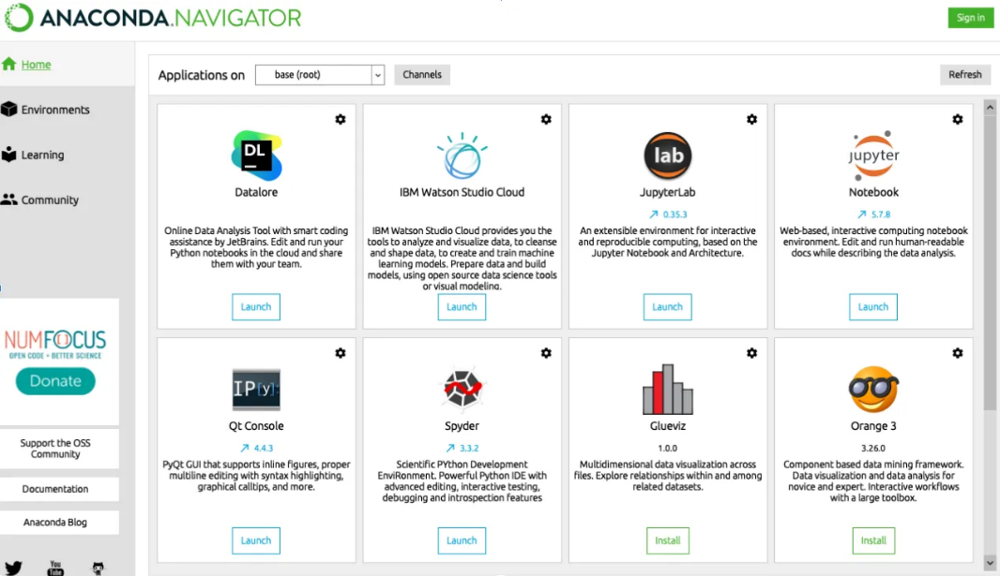
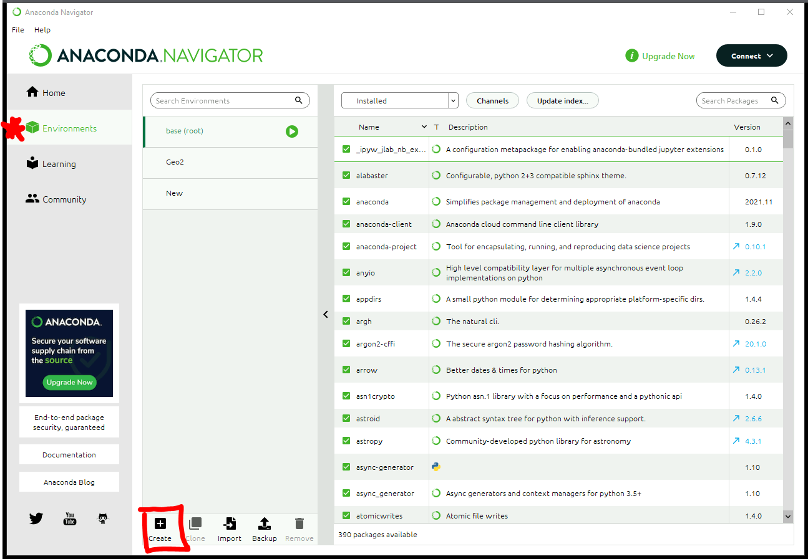

More about.....
SDMX
What is SDMX
SDMX, which stands for Statistical Data and Metadata eXchange is an international initiative that aims at standardising and modernising (“industrialising”) the mechanisms and processes for the exchange of statistical data and metadata among international organisations and their member countries.
Simply, SDMX is a new technology that simplifies the transmission of statistical data. SDMX is a standard and technology to style and trasmit data using machine-to-machine language. It is a:
- Logical model to describe and structure content
- Standard for automatic communication
- Technology supporting standardization
SDMX at STC
Currently, Census Profile inforation is alivalbe at all geography levels via an SDMX API. In the near future, all CODAR products will be avilable via an SDMX API. A small example is included below.
Learn more about the 2021 CEnsus Profile SMDX API
The SDMX Data Explorer allows users to query and view the results within your browser. New SDMX users generally find this helpful when tryign to understand the data before connecting via the API.
API Example
import pandas as pd
import pandasdmx as sdmx
info = {
"id": "STC_CP",
"url": "https://api.statcan.gc.ca/census-recensement/profile/sdmx/rest",
"name": "STC Census Profiles"
}
sdmx.add_source(info, id=None, override=True)
stc = sdmx.Request('STC_CP')
resp = stc.data('df_pr')
#df_pr- Canada, provinces and territories dataflow
data = resp.to_pandas()
#returns a series with a multi-index, "2-d series; 3-d dataframe"
data
| Dataflow code | Name of Dataflow | |
|---|---|---|
| DF_PR * | Canada, provinces and territories used in example above |
|
| DF_ADA | aggregate dissemination area | |
| DF_CD | census divisions | |
| DF_CMACA | census metropolitan areas and census agglomerations | |
| DF_CSD | census subdivisions (municipalities) | |
| DF_CT | census tracts | |
| DF_DA | dissemination areas | |
| DF_DPL | designated places | |
| DF_ER | economic regions | |
| DF_FED | federal electoral districts (2013 Representation Order) | |
| DF_POPCNTR | population centres |
SDMX API CHEAT SHEET : The SDMX Technical Working Group has also published a two-page cheat sheet (PDF, 83 KB) that summarizes the main points of the SDMX 2.1 RESTful API.
Anacoda
Anaconda is an open-source distribution of the Python and R that simplifies package management and deployment.
Anaconda leverages the package management system, conda, which analyzes the current environment before executing and installation to avoid disrupting other frameworks and packages.
Anaconda Navigator and allows users to launch applications and manage conda packages, environments and channels without using command-line commands.

To start Anaconda Navigator:

To create a new Environemnt using the GUI:

To create a new Environment using CMD window or python
To